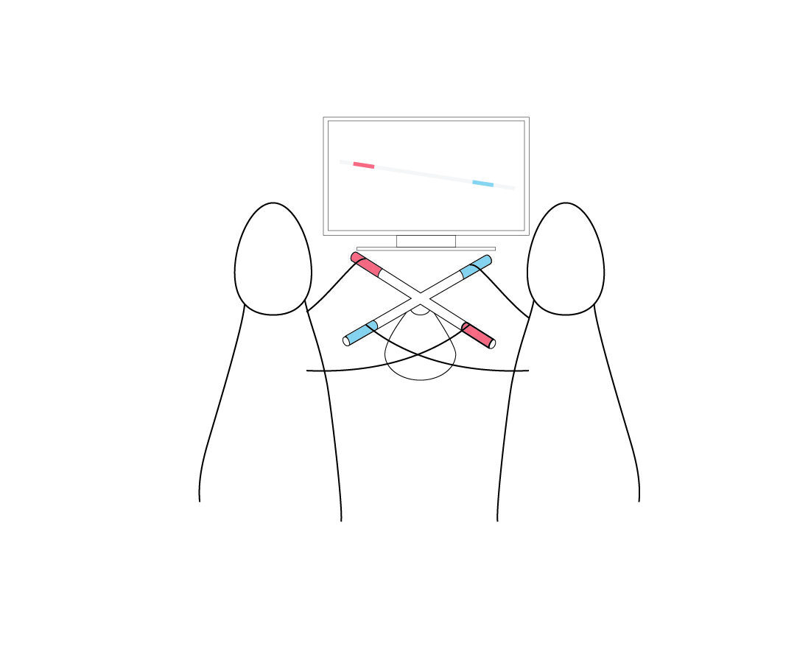
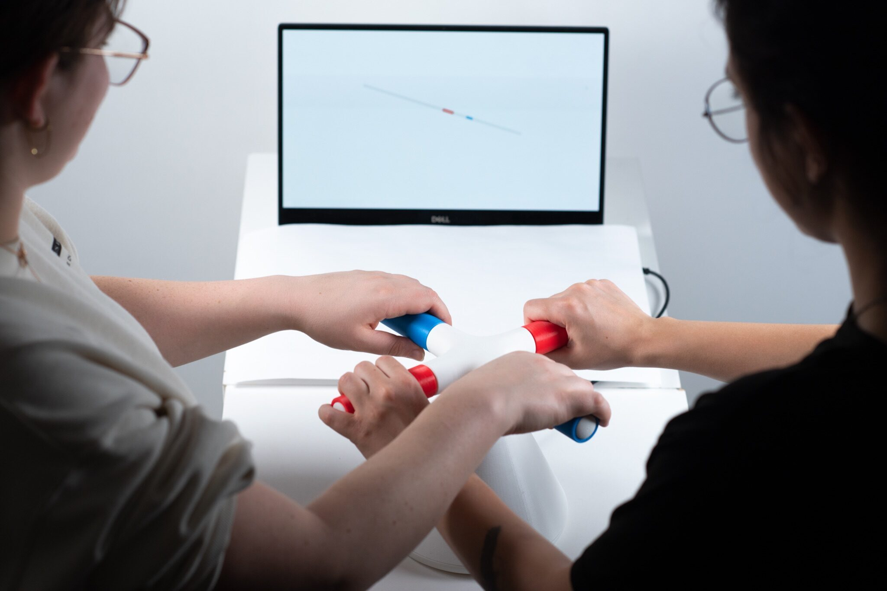
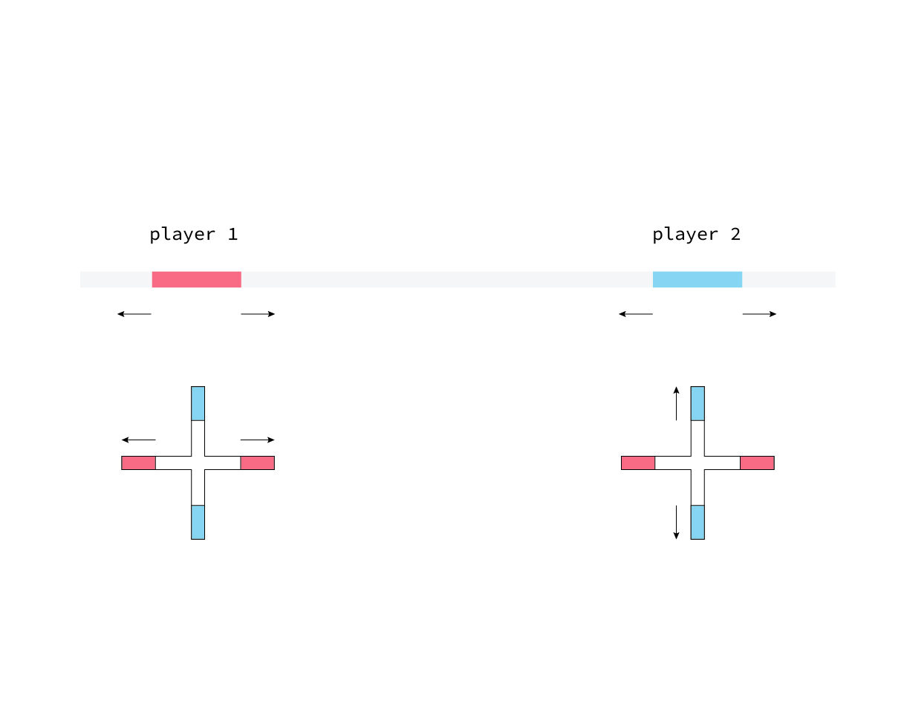
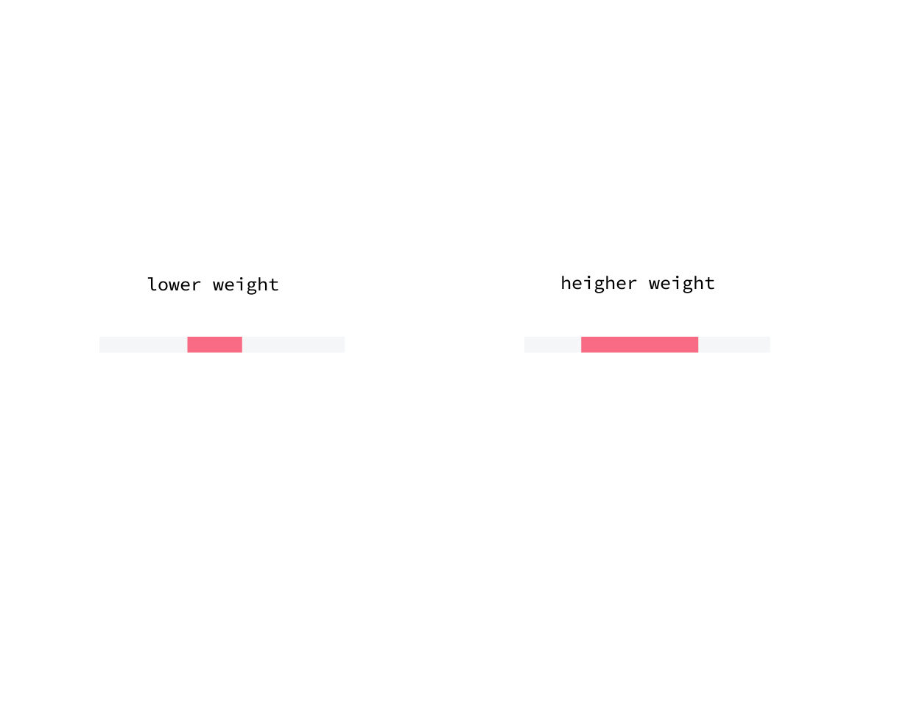
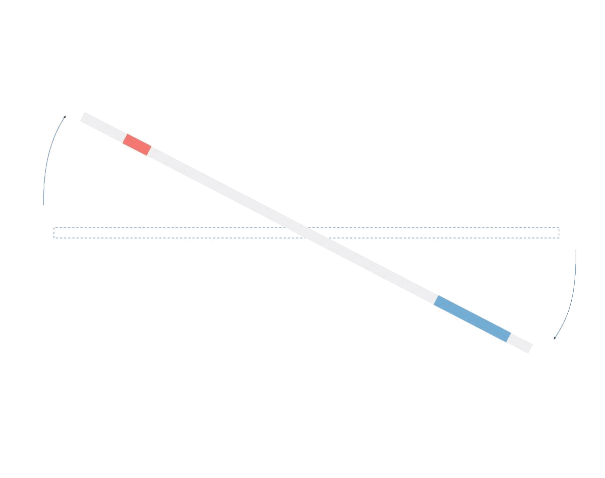
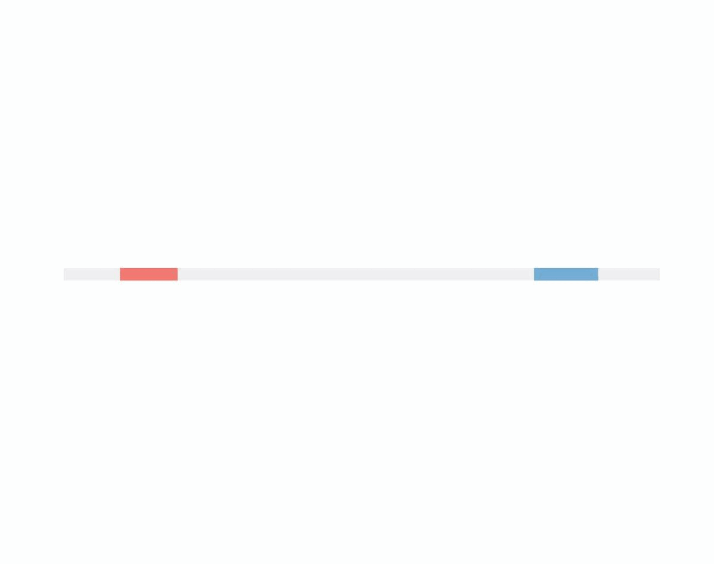
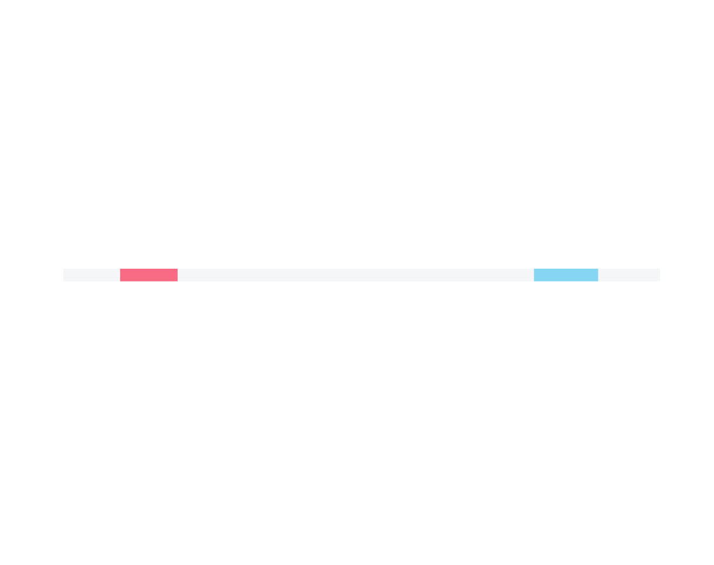
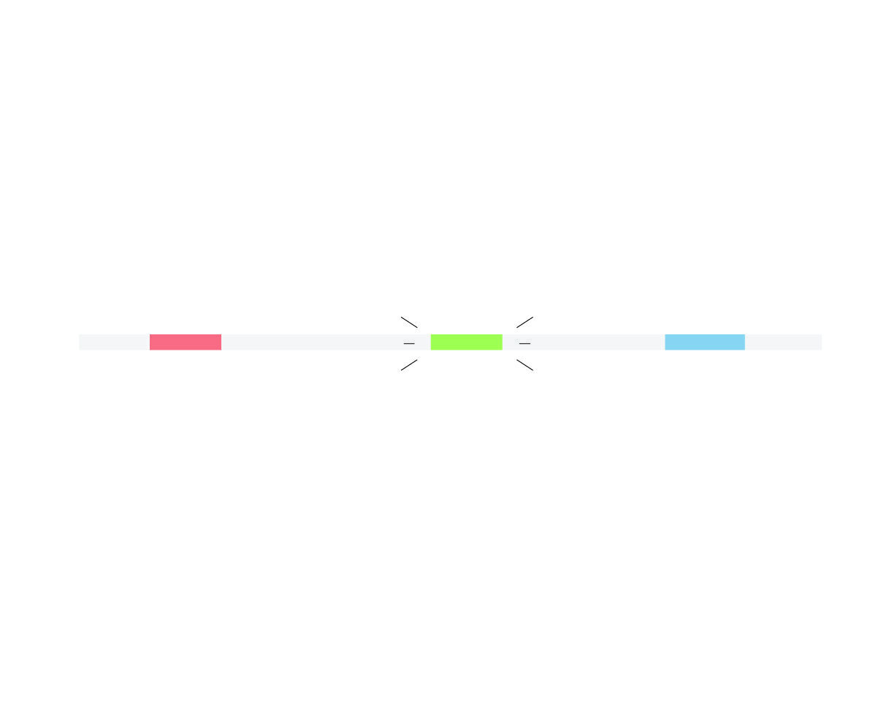
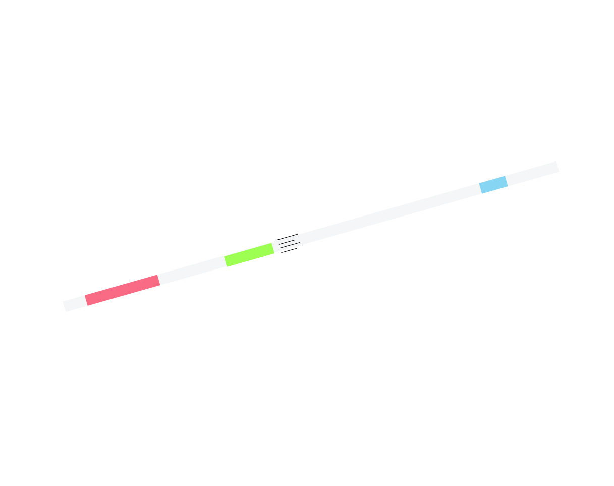

2023
SEE x SAW
a 1D game of balancing
Two players work together on one controller to maintain equilibrium as they slide along the rail and progress through increasingly challenging levels. The players appear as colored bars on the line, and move along it based on the angle of their controller. The weight fluctuates as they play, indicated by the width of their bar. If the blue and red touch or hit the end of the gray bar they bounce in the opposite direction, and disturb the balance.
CONTEXT
Interaction Intelligence Studio
MIT SA+P
SOFTWARE + TOOLS
JavaScript, P5js, Arduino, 3D Printing, Illustrator, 3D modeling, Rhino3D
COLLABORATORS
Kai Zhang
SUPERVISORS
Marcelo Cohelo






Drunk Third Player
When the two players reach forty seconds of play, a third colored bar is added to the line. However this 'third player' is not controlled by any of the controllers, it instead randomly moves back and forth and fluctuates around throwing a wrench into the game.



Design of the Controller
Although initially each player was intended to have separate controllers, this design of the controller emerged from the idea of having both players operate on the same controller. One singular joystick Arduino component becomes the elegant solution to the design of the object.
In order to allow for smooth use of the handles, ball bearings were added to the handles of the controller, and all of the components 3D printed.